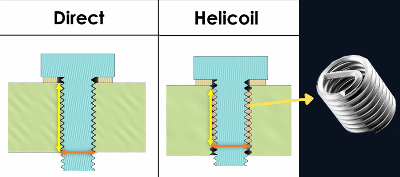
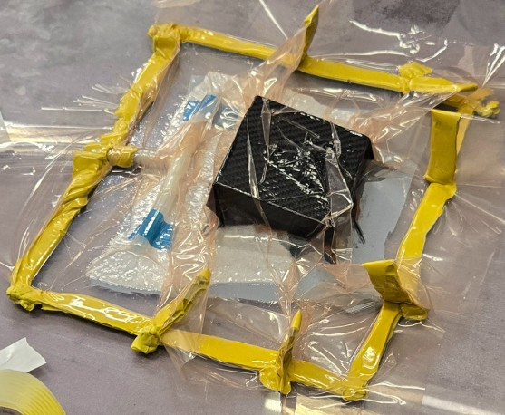
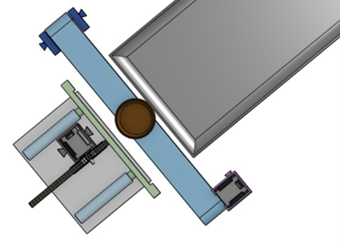
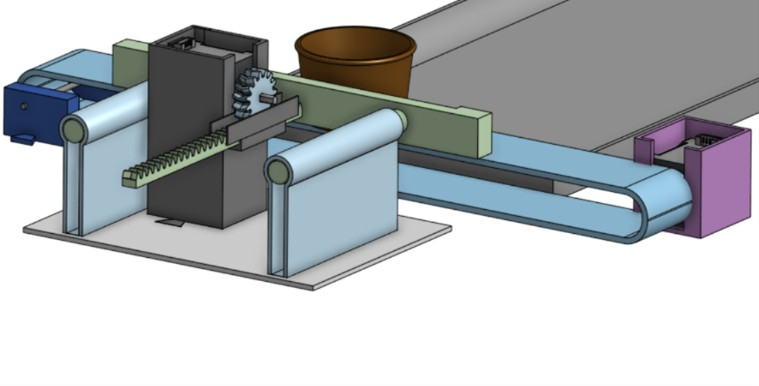
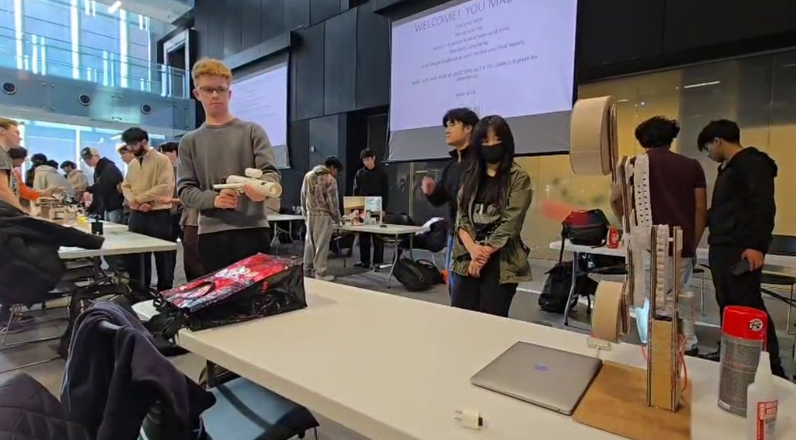
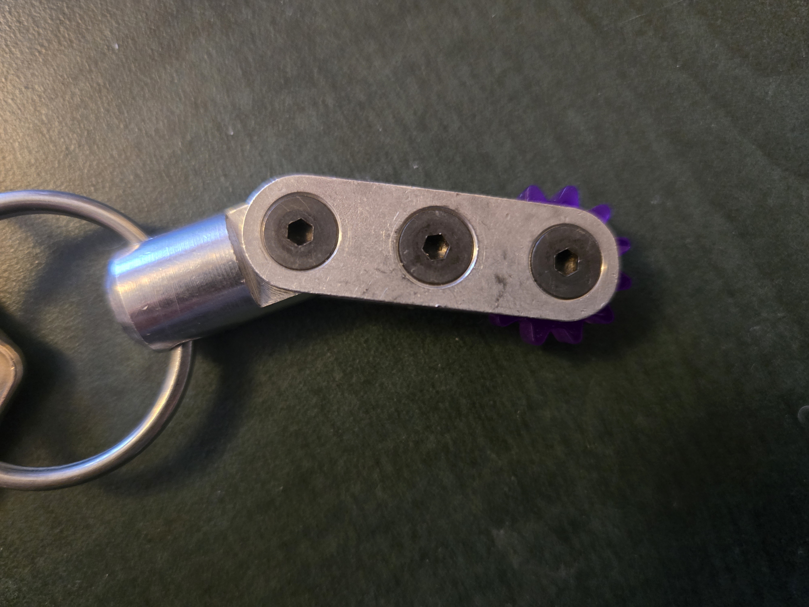
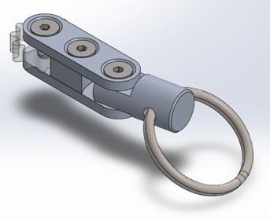

Projects
Formula Electric R&D – Joining Methods September 2025 - December 2025
Overview
The objective was to develop and test a mechanical joint technique to effectively join carbon fiber components.
Unlike regular direct inserts, helicoil inserts are replaceable and do not damage the aluminum parts lodged into the car components, reducing the need to replace entire sections of the car.
This R&D task focused on testing helicoil inserts on carbon fiber car component mockups.
How
- 3D printed parts with various shapes corresponding to carbon fiber component structures (e.g. airfoil)
- Waterjetted and tapped aluminum insert parts
- Performed carbon fiber layup
- Added helicoil inserts to the prototypes and performed strength and effectiveness analysis




Sauce Dispenser May 2025
Overview
For this project, we collaborated with another team who developed a sauce filling machine that filled and dropped sauce cups one by one. The objective was to develop an Arduino-based machine that receives the cups and carries them onto a heating plate.
Our sauce dispenser machine consisted of a treadmill system that received and transported the cups, along with a mechanical arm that pushed the cups from the treadmill onto the heating plate.
How
- Led the development of the robotic arm responsible for pushing the cups onto the plate
- Designed 3D CAD models of the mechanical arm and a custom gear to convert rotational motion into translational movement
- Set up and ran 3D prints
- Conducted validation testing and iterative design improvements to enhance dispenser efficiency
- Wired an Arduino-based electrical circuit with a stepper motor, driver, ultrasonic sensor, and capacitor
- Programmed the Arduino to synchronize arm motion with treadmill speed


And More... 2023 - 2025
The Loro Toy : A Target Shooting Game
Designed and fabricated a ball launching mechanism based on spring compression.
The blaster successfully launched balls across several meters and could be aimed at moving targets.

Keychain
Machined a keychain using a lathe, milling machine, drill press, and various hand tools.
Created a Solidworks assembly of the keychain along with an engineering drawing using GD&T constraints.


Gateway to Mars
Simulated the Hohmann Transfer, demonstrating the optimal launch window for transferring a spacecraft from Earth’s orbit to Mars’s orbit.
Placed second overall in the 2023 McGill Physics Hackathon using JavaScript and the p5.js library.
Despite strict time constraints, our team completed the project within 24 hours while coordinating and integrating multiple subsystems into a single functional simulation.